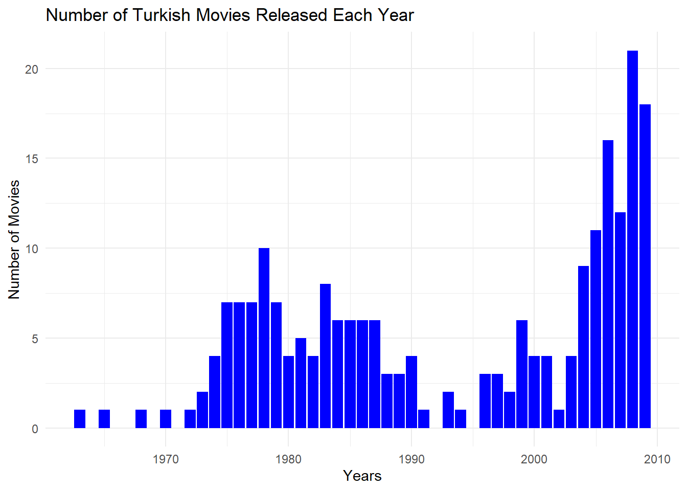

Arrange your data frame in descending order by Rating. Present the top 5 and bottom 5 movies based on user ratings. Have you watched any of these movies? Do you agree or disagree with their current IMDb Ratings?
kable(head(movies_df, 5), caption ="Top 5 Movies Based On User Ratings.")
Top 5 Movies Based On User Ratings.
Titles
Years
Durations
Ratings
Votes
9
Hababam Sinifi
1975
0
9.2
42512
25
Tosun Pasa
1976
0
8.9
24327
89
Hababam Sinifi Sinifta Kaldi
1975
0
8.9
24370
73
Süt Kardesler
1976
0
8.8
20885
36
Saban Oglu Saban
1977
0
8.7
18535
I have watched all the movies listed in the top 5. They are films that I can watch repeatedly without getting bored. However, I don’t think they deserve to be in the top 5.
Bottom 5 movies based on user ratings.
Code
kable(tail(movies_df, 5), caption ="Bottom 5 Movies Based On User Ratings.")
Bottom 5 Movies Based On User Ratings.
Titles
Years
Durations
Ratings
Votes
158
Araf
2006
0
2.4
4276
86
Çilgin Dersane
2007
0
1.9
3899
129
Keloglan Karaprens’e Karsi
2006
0
1.6
9616
33
Dünyayi Kurtaran Adam’in Oglu
2006
0
1.5
16704
195
Emret Komutanim: Sah Mat
2007
0
1.5
7047
I haven’t watched any of the movies mentioned in the lower ranks. Honestly, I believe they deserve their places in the ranking.
This list contains my favourite movies. If I choose 2 movies from this list, these movies would be Nefes:Vatan Sağolsun and Babam ve Oğlum.
Considering that audience rating is a crucial indicator of movie quality, what canyou infer about the average ratings of Turkish movies over the years? Calculate yearlyrating averages and plot them as a scatter plot. Similarly, plot the number ofmovies over the years. You might observe that using yearly averages could be misleadingdue to the increasing number of movies each year. As an alternative solution,plot box plots of ratings over the years (each year having a box plot showing statisticsabout the ratings of movies in that year). What insights do you gather from the box plot?
Code
# Assuming 'movies' data frame is available with columns: Titles, Years, Ratings, Voteslibrary(tidyverse)library(ggplot2)# Calculate yearly rating averagesaverage_ratings <- movies_df %>%group_by(Years) %>%summarise(Average_Rating =mean(Ratings),Number_of_Movies =n())# Scatter plot for yearly rating averagesggplot(average_ratings, aes(x = Years, y = Average_Rating, size = Number_of_Movies)) +geom_point() +labs(title ="Yearly Average Ratings of Turkish Movies",x ="Years",y ="Average Rating") +theme_minimal()
Code
# Number of movies over the yearsggplot(average_ratings, aes(x = Years, y = Number_of_Movies)) +geom_bar(stat ="identity", fill ="blue") +labs(title ="Number of Turkish Movies Released Each Year",x ="Years",y ="Number of Movies") +theme_minimal()

Code
# Box plots of ratings over the yearsggplot(movies_df, aes(x =as.factor(Years), y = Ratings)) +geom_boxplot(fill ="blue") +labs(title ="Box Plots of Ratings of Turkish Movies Over the Years",x ="Years",y ="Ratings") +theme_minimal()
Do you believe there is a relationship between the number of votes a movie received and its rating?Investigate the correlation between Votes and Ratings.
Warning in cor(movies_df$Durations, movies_df$Ratings): the standard deviation
is zero
Code
corr_duration_rating
[1] NA
As we see, there is no relationship between duration and rating.
Question 4
Use IMDb’s Advanced Title Search interface with The Title Type set to “Movie” only,the Country set to “Turkey” with the option “Search country of origin only” active,and the Awards & Recognation set to “IMDB Top 1000”. You should find a total of11 movies.